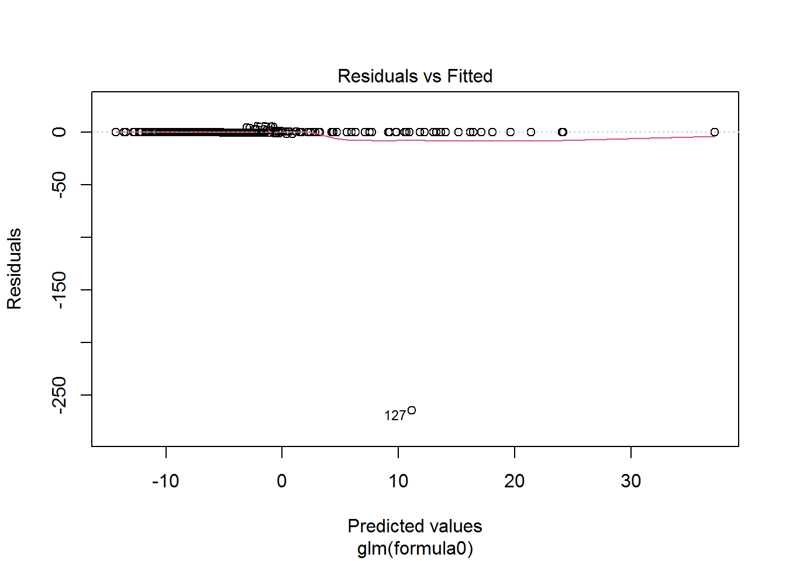

2 Data
The data set used for modelling can be found download from UC Irvine. The data set contains laboratory values of blood donors and Hepatitis C patients and demographic values like age. As mentioned, the focus is incorporating data science project and reports in an efficient format.
#Import Data
data<-read.csv("data/hcvdat0.csv",header = T,colClasses=c("NULL", rep(NA, 13)))
#A quick summary - checking number of categorical and numeric variables
skimr::skim(data)[1:3]| Name | data |
| Number of rows | 615 |
| Number of columns | 13 |
| _______________________ | |
| Column type frequency: | |
| character | 2 |
| numeric | 11 |
| ________________________ | |
| Group variables | None |
Variable type: character
| skim_variable | n_missing |
|---|---|
| Category | 0 |
| Sex | 0 |
Variable type: numeric
| skim_variable | n_missing |
|---|---|
| Age | 0 |
| ALB | 1 |
| ALP | 18 |
| ALT | 1 |
| AST | 0 |
| BIL | 0 |
| CHE | 0 |
| CHOL | 10 |
| CREA | 0 |
| GGT | 0 |
| PROT | 1 |
Modify the target variableCategoryinto binary so that Category= 0 if it falls into either”0=Blood Donor”or”0s=suspect Blood Donor”and 1 if it falls into any other categoryexcept being missing, in which case we keep it as is.
data$Category<-ifelse(data$Category=="0=Blood Donor" | data$Category=="0s=suspect Blood Donor",0,1)#Frequency distribution of Category
table(data$Category) ##
## 0 1
## 540 75Frequency distribution shows “0”=570 and “1”=75.This shows an imbalanced classification problem since the frequency of response (Category) is skewed towards “0”. Observe Imbalanced classification problem. Methods for handling imbalanced classification problems such as undersampling and oversampling can be considered, however, that is beyond the scope or goal of this project.
2.1 Missing values and MICE Imputation.
colMeans(is.na(data))## Category Age Sex ALB ALP ALT
## 0.000000000 0.000000000 0.000000000 0.001626016 0.029268293 0.001626016
## AST BIL CHE CHOL CREA GGT
## 0.000000000 0.000000000 0.000000000 0.016260163 0.000000000 0.000000000
## PROT
## 0.001626016This shows the proportion of missing values in each column or varibale. We can observe that,ALP has the highest missing values.
#visualizing missing values
gg_miss_upset(data)
Mice Imputation for missing values.
#Model matric to tansform the data to numeric
data<-model.matrix(~.,data = data)
data<-data[,-1]